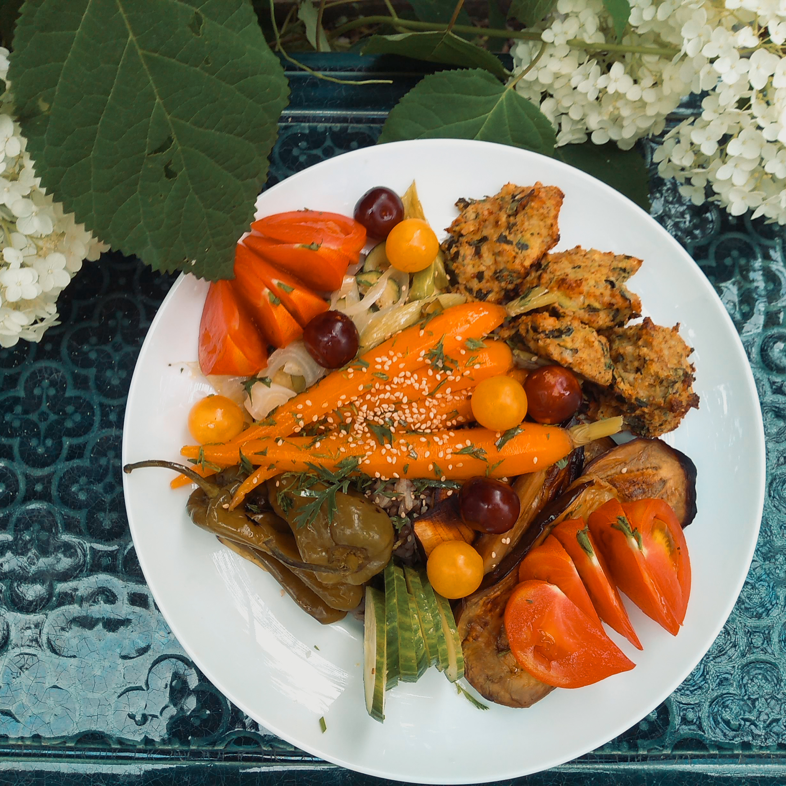

Cette semaine
Mardi
Comme tous les mercredis, c’est retour de marché! des tonalités italiennes avec un bon mélange de végétaux crus ou juste saisis (asperges, courgettes, carottes, cebettes, romaine, entre autres), du parmesan, un oeuf mollet, une focaccia aux herbes maison.

Mercredi
Comme tous les mercredis, c’est retour de marché! des tonalités italiennes avec un bon mélange de végétaux crus ou juste saisis (asperges, courgettes, carottes, cebettes, romaine, entre autres), du parmesan, un oeuf mollet, une focaccia aux herbes maison.

Jeudi
Comme tous les mercredis, c’est retour de marché! des tonalités italiennes avec un bon mélange de végétaux crus ou juste saisis (asperges, courgettes, carottes, cebettes, romaine, entre autres), du parmesan, un oeuf mollet, une focaccia aux herbes maison.
Vendredi
Comme tous les mercredis, c’est retour de marché! des tonalités italiennes avec un bon mélange de végétaux crus ou juste saisis (asperges, courgettes, carottes, cebettes, romaine, entre autres), du parmesan, un oeuf mollet, une focaccia aux herbes maison.